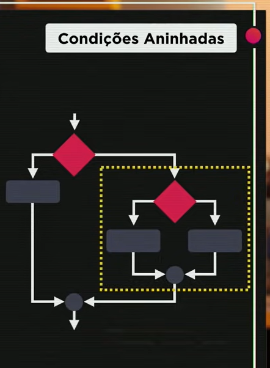
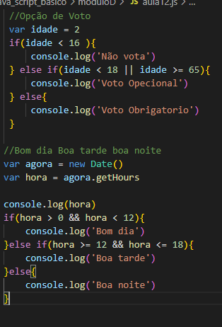
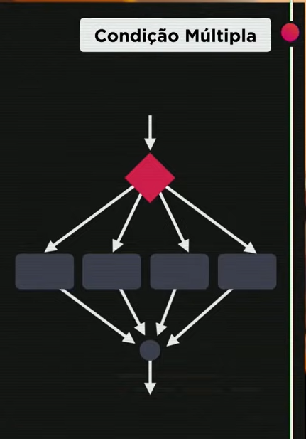
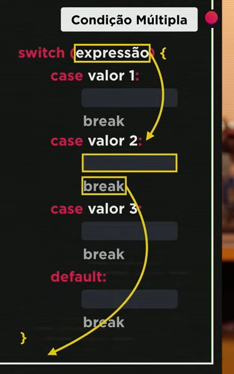
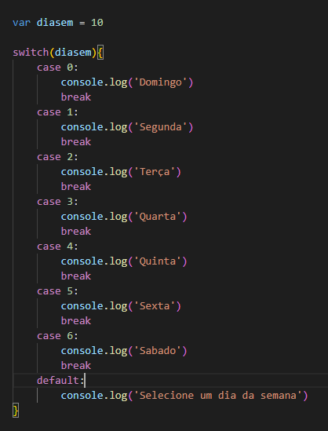

Condições (Parte 2)
EX: Feito na aula
Desafio
Exercicios para treinar (if/else) condições composta e aninhada
Desafio
Exercicios para treinar (if/else) condições composta e aninhada
Condição aninhada
Condição aninhada, seria como no exemplo desse código abaixo, uma estrutura if/else ou apenas if dentro da outra, dando mais opções de caminho de uma determinada ação.
 Condição Multipla
 Como mostra na imagem acima, a expressão switch case, mostrando como mostra na imagem acima, ela é uma condição multipla.
exemplo de código de condição multipla,switch case
